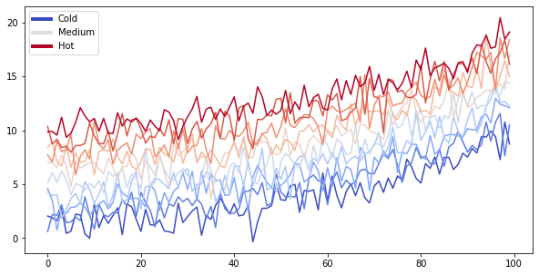
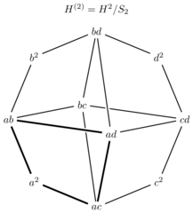

Notebooks with Markdown Content¶
MyST markdown¶
MyST markdown works in Jupyter Notebooks as well. For more information about MyST markdown, check out the MyST guide in Jupyter Book, or see the MyST markdown documentation.
Code blocks and outputs¶
Jupyter Book will also embed your code blocks and output in your book. For example, here’s some sample Matplotlib code:
from matplotlib import rcParams, cycler
import matplotlib.pyplot as plt
import numpy as np
plt.ion()
<matplotlib.pyplot._IonContext at 0x10aa6ee50>
# Fixing random state for reproducibility
np.random.seed(19680801)
N = 10
data = [np.logspace(0, 1, 100) + np.random.randn(100) + ii for ii in range(N)]
data = np.array(data).T
cmap = plt.cm.coolwarm
rcParams['axes.prop_cycle'] = cycler(color=cmap(np.linspace(0, 1, N)))
from matplotlib.lines import Line2D
custom_lines = [Line2D([0], [0], color=cmap(0.), lw=4),
Line2D([0], [0], color=cmap(.5), lw=4),
Line2D([0], [0], color=cmap(1.), lw=4)]
fig, ax = plt.subplots(figsize=(10, 5))
lines = ax.plot(data)
ax.legend(custom_lines, ['Cold', 'Medium', 'Hot']);

There is a lot more that you can do with outputs (such as including interactive outputs) with your book. For more information about this, see the Jupyter Book documentation
TikZ magic¶
https://github.com/mkrphys/ipython-tikzmagic
Installed using:
brew install pdf2svg
pip install git+git://github.com/mkrphys/ipython-tikzmagic.git
Used as follows:
%load_ext tikzmagic
%%tikz
\draw (0,0) rectangle (1,1);
%%tikz
\begin{scope}[scale=1,shorten >=0pt,shorten <=0pt]
\coordinate (title) at (90:3.75);
\draw (title) node {$H^{(2)}=H^2/S_2$};
\draw (0:3) node[] (cd) {$cd$};
\draw (45:3) node[] (d2) {$d^2$};
\draw (90:3) node[] (bd) {$bd$};
\draw (135:3) node[] (b2) {$b^2$};
\draw (180:3) node[] (ab) {$ab$};
\draw (225:3) node[] (a2) {$a^2$};
\draw (270:3) node[] (ac) {$ac$};
\draw (315:3) node[] (c2) {$c^2$};
\draw (315:0.7) node[] (ad) {$ad$};
\draw (135:0.7) node[] (bc) {$bc$};
\draw[ultra thick] (a2) -- (ab);
\draw[thick] (ab) -- (b2);
\draw[thick] (b2) -- (bd);
\draw[thick] (bd) -- (d2);
\draw[thick] (d2) -- (cd);
\draw[thick] (cd) -- (c2);
\draw[thick] (c2) -- (ac);
\draw[ultra thick] (ac) -- (a2);
\draw[thick] (bc) -- (bd);
\draw[ultra thick] (ad) -- (ac);
\draw[thick] (ac) -- (bc);
\draw[thick] (ab) -- (bc);
\draw[thick] (bc)-- (cd);
\draw[thick] (cd) -- (ad);
\draw[ultra thick] (ad) -- (ab);
\draw[line width=4pt,white] (bd) -- (ad); \draw[thick] (bd) -- (ad);
\draw[line width=4pt,,white] (ad)-- (ab); \draw[ultra thick] (ad)-- (ab);
\end{scope}

import ipywidgets as widgets
widgets.IntSlider(
value=7,
min=0,
max=10,
step=1,
description='Test:',
disabled=False,
continuous_update=False,
orientation='horizontal',
readout=True,
readout_format='d'
)